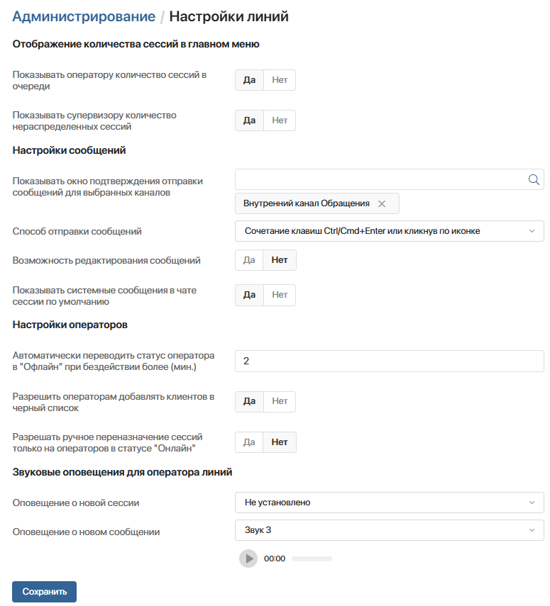

После создания одной или нескольких линий вы можете изменить параметры, которые влияют на работу сотрудников во всех линиях, настроенных в системе.
начало внимание
Настройки линий доступны только с лицензией ELMA365 Service для пользователей, включённых в группу Администраторы.
конец внимание
Чтобы отредактировать настройки:
- Перейдите в раздел Администрирование > Настройки линий.
- Измените значения опций:

- Отображать счётчик для оператора — опция управляет отображением счётчика нераспределённых сессий для операторов в левом меню;
- Отображать счётчик для супервизора — опция управляет отображением счётчика нераспределённых сессий для супервизоров в левом меню;
- Отображать окно подтверждения отправки сообщений для выбранных каналов — по умолчанию сообщения в линиях отправляются сразу при нажатии заданного сочетания клавиш или значка отправки на странице сессии. Вы можете настроить отображение окна подтверждения, чтобы перед отправкой оператор мог вернуться к сообщению и ещё раз проверить его корректность.
Опция применяется на уровне отдельных каналов связи, настроенных в рамках созданных линий. Например, можно включить окно подтверждения для мессенджера Telegram, подключённого к линии Обработка заказов, или для канала электронной почты в линии Служба поддержки.
Чтобы включить опцию для канала, добавьте его в список. Для этого начните вводить в поле его название или нажмите значок лупы и выберите нужный вариант.
Для каждой линии по умолчанию создаётся канал внутренних обращений. В его названии указывается линия, например Внутренний канал Техническая поддержка. Выберите его, чтобы включить окно подтверждения для ответов на обращения пользователей ELMA365;
- Способ отправки сообщений — выберите, как оператор сможет отправлять сообщения в сессиях:
- Сочетание клавиш Ctrl/Cmd+Enter или кликнув по иконке — опция используется по умолчанию;
- Нажатие на Enter или кликнув по иконке;
- Только кликнув по иконке;
- Возможность редактирования сообщений — установите Да, чтобы операторы могли:
- изменять свои сообщения в сессиях, созданных из внутренней линии с пользователями ELMA365, каналов Telegram, TelegramBot и LiveChat с клиентами;
- удалять отправленные файлы в сообщениях из внутренней линии и канала LiveChat;
- Допустимое время бездействия пользователя без смены статуса оператора в оффлайн (мин.) — задайте срок в минутах, по истечении которого неактивный оператор или супервизор линий автоматически переводится в статус Офлайн. Пользователь считается неактивным, если он вышел из ELMA365, закрыл окно браузера или не подключён к сети. Вы можете указать в поле целое число от 2 до 999. По умолчанию установлено минимальное значение 2, при котором статус меняется по истечении 1–2 минут;
- Разрешить операторам добавлять клиентов в черный список — определите, кто из сотрудников сможет блокировать учётные записи клиентов и возвращать их из чёрного списка со страницы сессии. По умолчанию действия доступны операторам и супервизору. Выберите Нет, чтобы работать с блокировкой пользователей мог только супервизор;
- Разрешать ручное переназначение сессий только на операторов в статусе онлайн — по умолчанию при назначении сессии супервизор или оператор могут выбрать любого сотрудника независимо от его статуса. Установите Да, чтобы в окне выбора оператора отображались только пользователи со статусом Онлайн;
- Оповещение о новой сессии — из выпадающего списка выберите звуковой сигнал, поступающий операторам при создании новой сессии в линиях, за которые они ответственны;
- Оповещение о новом сообщении — из выпадающего списка выберите звуковой сигнал, который услышит оператор при получении нового сообщения в назначенных на него сессиях.
- Внизу страницы нажмите Сохранить.